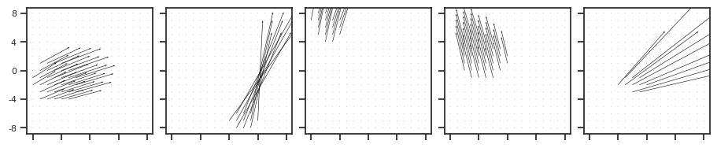

Fig: Intro, etc#
# HIDE CODE
import os, sys
from IPython.display import display
# tmp & extras dir
git_dir = os.path.join(os.environ['HOME'], 'Dropbox/git')
extras_dir = os.path.join(git_dir, 'jb-MTMST/_extras')
fig_base_dir = os.path.join(git_dir, 'jb-MTMST/figs')
tmp_dir = os.path.join(git_dir, 'jb-MTMST/tmp')
# GitHub
sys.path.insert(0, os.path.join(git_dir, '_MTMST'))
from vae.train_vae import TrainerVAE, ConfigTrainVAE
from vae.vae2d import VAE, ConfigVAE
from figures.fighelper import *
from analysis.glm import *
# warnings, tqdm, & style
warnings.filterwarnings('ignore', category=DeprecationWarning)
from rich.jupyter import print
%matplotlib inline
set_style()
pal_model, pal_cat = get_palette()
skip_fits = [
'fixate2_nf-420_beta-0.15_(2023_04_27,13:57)',
'fixate1_nf-420_beta-0.8_(2023_05_07,04:15)',
]
kws_fig = {
'transparent': True,
'bbox_inches': 'tight',
'dpi': 300,
}
def _info(fit):
info = fit.split('_')
i = info.index([
e for e in info
if 'nf-' in e
].pop())
category = info[i - 1]
nf = int(info[i].split('-')[1])
beta = info[i + 1].split('-')[1]
try:
beta = float(beta)
except ValueError:
beta = str(beta)
tag = 'VAE' if 'vanilla' in info else 'cNVAE'
if beta == 'ae':
tag = tag.replace('V', '')
return category, nf, beta, tag
# HIDE CODE
def _do_pca(a):
a = flatten_arr(a, ndim_end=0, ndim_start=1)
u, s, v = sp_lin.svd(a, full_matrices=False, compute_uv=True)
s *= 100 / s.sum()
titles = [f"{e:0.1f} %" for e in s]
pcs = v.reshape(-1, of.dim, of.dim, 2)
return s, pcs, titles
def _plot_singular_values(s, thres=90):
fig, axes = create_figure(2, 1, (13, 7), sharex='all')
axes[0].plot(s, marker='.')
axes[1].plot(np.cumsum(s), lw=3, marker=None)
idx = np.where(np.cumsum(s) > thres)[0][0]
axes[1].axvline(
idx, color='g', ls=':', lw=1.5,
label=f'{idx} dimensions',
)
axes[1].axhline(
thres, color='magenta', ls=':', lw=1.5,
label=f'{thres}% of variance',
)
axes[1].legend()
axes[1].axhline(0, color='k', ls='--', lw=1.2)
axes[1].axhline(100, color='k', ls='--', lw=1.2)
axes[1].set_ylim((-3, 103))
add_grid(axes)
plt.show()
def _sizes_hist(of, obj_i: int = 0):
fig, ax = create_figure(1, 1, (15, 5))
size_pix = of.objects[obj_i].size * of.dim ** 2
sns.histplot(size_pix, bins=np.linspace(0, 100, 101) - 0.5, stat='percent', ax=ax)
for color, thres in zip(['magenta', 'k', 'r'], [2, 4, 8]):
lbl = f'{100 * (size_pix < thres).sum() / of.n:0.1f}% smaller than {thres} pixels'
ax.axvline(thres, color=color, ls='--', lw=1.3, label=lbl)
ax.legend(fontsize=17)
plt.show()
kws = dict(
dim=17,
fov=45.0,
obj_r=0.25,
obj_bound=0.97,
obj_zlim=(0.5, 1.0),
vlim_obj=(0.01, 1.0),
vlim_slf=(0.01, 1.0),
residual=False,
z_bg=1.0,
seed=0,
)
print(kws)
min_obj_size = 3.5
{ 'dim': 17, 'fov': 45.0, 'obj_r': 0.25, 'obj_bound': 0.97, 'obj_zlim': (0.5, 1.0), 'vlim_obj': (0.01, 1.0), 'vlim_slf': (0.01, 1.0), 'residual': False, 'z_bg': 1.0, 'seed': 0 }
Test#
from analysis.opticflow import ROFL
%%time
of = ROFL(
category='fixate',
n=int(1.23e2),
n_obj=1,
**kws,
).compute_coords()
_ = of.compute_flow()
accept = of.filter(min_obj_size)
of.gamma = None
s, pcs, titles = _do_pca(of.alpha_dot[accept])
CPU times: user 409 ms, sys: 18.1 ms, total: 427 ms
Wall time: 162 ms
accept.sum()
110
_ = show_opticflow(of.alpha_dot[accept])
ROFL traversal#
n = 7
rofl = ROFL(category='fixate', n=n, n_obj=1, **kws)
results = (2, 7, rofl.dim, rofl.dim, 2)
results = np.empty(results, dtype=float)
titles = np.empty((2, n), dtype=object)
# fixed variables
v_slf = np.array([0, 0, 1])
v_slf = np.repeat(v_slf.reshape(1, -1), n, 0)
v_obj = np.array([0.8, 0.5, 0])
v_obj = np.repeat(v_obj.reshape(1, -1), n, 0)
\(X_{obj}\)#
# slf
fix = np.array([0, 0])
fix = np.repeat(fix.reshape(1, -1), n, 0)
attrs_slf = {'fix': fix, 'v_slf': v_slf}
# obj
alpha = np.array([rofl.span[3], rofl.span[4]])
alpha = np.repeat(alpha.reshape(1, -1), n, 0)
inds = range(2, 2 + n * 2, 2)
alpha[:, 0] = [rofl.span[i] for i in inds]
attrs_obj = {0: {
'v_obj': v_obj,
'alpha': alpha,
'z': np.ones(n) * 0.55,
}}
# compute flows
rofl.setattrs(attrs_slf, attrs_obj)
_ = rofl.compute_flow()
# get results
results[0] = rofl.alpha_dot
titles[0] = [
r"$F_x = 0, X_{obj} = $" + \
f"{e - rofl.dim // 2}"
for e in inds
]
\(F_x\)#
# slf
fix = np.zeros((n, 2))
fix[:, 0] = np.linspace(-0.4, 0.4, n)
attrs_slf = {'fix': fix, 'v_slf': v_slf}
# obj
i = 4
alpha = np.array([rofl.span[i], rofl.span[4]])
alpha = np.repeat(alpha.reshape(1, -1), n, 0)
attrs_obj = {0: {
'v_obj': v_obj,
'alpha': alpha,
'z': np.ones(n) * 0.55,
}}
# compute flows
rofl.setattrs(attrs_slf, attrs_obj)
_ = rofl.compute_flow()
# get results
results[1] = rofl.alpha_dot
titles[1] = [
r"$F_{x} = $" + \
f"{int(f*10)}, " + \
r"$X_{obj} = $" + \
f"{i - rofl.dim // 2}"
for f in fix[:, 0]
]
plot#
fig, axes = show_opticflow_row(
x=results,
titles=titles,
title_fontsize=9,
figsize=(9, 3),
scale=12,
)
Examples#
rows = np.zeros((3, 5, 17, 17, 2))
fixate-1#
%%time
of = ROFL(
category='fixate',
n=int(1.23e2),
n_obj=1,
**kws,
).compute_coords()
_ = of.compute_flow()
accept = of.filter(min_obj_size)
of.gamma = None
s, pcs, titles = _do_pca(of.alpha_dot[accept])
CPU times: user 331 ms, sys: 71 ms, total: 402 ms
Wall time: 171 ms
accept.sum()
110
selected_1 = [0, 17, 22, 79, 40]
_ = show_opticflow(of.alpha_dot[accept][selected_1], 5)
rows[0] = of.alpha_dot[accept][selected_1]
fixate-0#
%%time
of = ROFL(
category='fixate',
n=int(1.23e2),
n_obj=0,
**kws,
).compute_coords()
_ = of.compute_flow()
accept = of.filter(min_obj_size)
of.gamma = None
s, pcs, titles = _do_pca(of.alpha_dot[accept])
CPU times: user 275 ms, sys: 0 ns, total: 275 ms
Wall time: 102 ms
accept.sum()
123
selected_2 = [0, 17, 22, 79, 40]
_ = show_opticflow(of.alpha_dot[accept][selected_2], 5)
rows[1] = of.alpha_dot[accept][selected_2]
obj-1#
%%time
of = ROFL(
category='obj',
n=int(1.23e2),
n_obj=1,
**kws,
).compute_coords()
_ = of.compute_flow()
accept = of.filter(min_obj_size)
of.gamma = None
s, pcs, titles = _do_pca(of.alpha_dot[accept])
CPU times: user 371 ms, sys: 2.38 ms, total: 373 ms
Wall time: 157 ms
accept.sum()
110
selected_3 = [0, 19, 12, 8, 40]
_ = show_opticflow(of.alpha_dot[accept][selected_1], 5)

rows[2] = of.alpha_dot[accept][selected_3]
fig, axes = show_opticflow_row(rows, figsize=(9 / 7 * 5, 3.9))
fig.savefig(pjoin(fig_base_dir, 'rofl_eg.pdf'), **kws_fig)
HF frame#
f = h5py.File('/home/hadi/Documents/MTMST/data/ALL_tres25.h5')
g = f['YUWEI']['clu090']
stim, spks, mask, stim_r, spks_r, good_r = load_ephys(g)
show_opticflow(stim[100:], scale=5);
show_opticflow_full(stim[103], scale=5);
span = range(-8, 8 + 1)
ticks, ticklabels = make_ticks(span, 4)
fig, ax = create_figure(1, 1)
ax.quiver(
span, span, stim[103][0], stim[103][1],
# headaxislength=7,
# headlength=,
scale=3.5,
)
ax.set(
xticks=ticks,
yticks=ticks,
xticklabels=ticklabels,
yticklabels=ticklabels,
)
remove_ticks(ax, False)
ax_square(ax)
plt.show()
fig.savefig(pjoin(fig_base_dir, 'hf.pdf'), **kws_fig)
stim[103].shape
(2, 17, 17)
Raster plot#
g = f['YUWEI']['clu267']
stim, spks, mask, stim_r, spks_r, good_r = load_ephys(g)
x = spks_r[4]
x.shape
(43, 201)
plt.plot(np.nanmean(x, 0));
indices = np.argwhere(x > 1)
# Plot the raster plot
fig, axes = create_figure(2, 1, (5, 4.5), 'all', layout='constrained', height_ratios=[1.5, 1])
axes[0].plot(np.nanmean(x, 0) / 25e-3, color='k')
axes[1].scatter(indices[:, 1], indices[:, 0], marker='|', color='k', s=10, alpha=1)
axes[1].set_xlabel('Time')
axes[1].set_ylabel('Trials')
axes[1].set_xlim(0, x.shape[1])
axes[1].set_ylim(0, x.shape[0])
axes[1].invert_yaxis()
plt.show()
indices
array([[ 0, 86],
[ 0, 148],
[ 0, 152],
[ 0, 155],
[ 0, 156],
[ 0, 157],
[ 0, 159],
[ 0, 160],
[ 0, 161],
[ 0, 162],
[ 0, 164],
[ 0, 166],
[ 1, 3],
[ 1, 5],
[ 1, 73],
[ 1, 145],
[ 1, 146],
[ 1, 154],
[ 1, 155],
[ 1, 157],
[ 1, 160],
[ 1, 170],
[ 2, 5],
[ 2, 21],
[ 2, 24],
[ 2, 53],
[ 2, 151],
[ 2, 154],
[ 2, 156],
[ 2, 158],
[ 2, 168],
[ 3, 145],
[ 3, 146],
[ 3, 147],
[ 3, 153],
[ 3, 155],
[ 3, 156],
[ 3, 160],
[ 3, 161],
[ 3, 162],
[ 4, 21],
[ 4, 25],
[ 4, 53],
[ 4, 146],
[ 4, 147],
[ 4, 153],
[ 4, 155],
[ 4, 156],
[ 4, 159],
[ 4, 161],
[ 4, 164],
[ 5, 142],
[ 5, 145],
[ 5, 154],
[ 5, 155],
[ 5, 156],
[ 5, 159],
[ 5, 161],
[ 5, 162],
[ 5, 164],
[ 5, 165],
[ 6, 53],
[ 6, 67],
[ 6, 145],
[ 6, 157],
[ 6, 158],
[ 6, 159],
[ 6, 160],
[ 6, 162],
[ 6, 164],
[ 6, 165],
[ 7, 7],
[ 7, 70],
[ 7, 142],
[ 7, 154],
[ 7, 157],
[ 7, 158],
[ 7, 159],
[ 7, 161],
[ 7, 163],
[ 7, 165],
[ 8, 26],
[ 8, 48],
[ 8, 66],
[ 8, 144],
[ 8, 145],
[ 8, 155],
[ 8, 158],
[ 8, 162],
[ 8, 164],
[ 9, 91],
[ 9, 148],
[ 9, 153],
[ 9, 154],
[ 9, 155],
[ 9, 157],
[ 9, 162],
[ 9, 166],
[ 10, 4],
[ 10, 7],
[ 10, 155],
[ 10, 158],
[ 10, 160],
[ 10, 161],
[ 10, 163],
[ 11, 4],
[ 11, 125],
[ 11, 145],
[ 11, 147],
[ 11, 153],
[ 11, 154],
[ 11, 155],
[ 11, 156],
[ 11, 157],
[ 11, 160],
[ 11, 162],
[ 11, 165],
[ 11, 166],
[ 12, 9],
[ 12, 24],
[ 12, 69],
[ 12, 147],
[ 12, 154],
[ 12, 156],
[ 12, 157],
[ 12, 158],
[ 12, 162],
[ 12, 167],
[ 13, 4],
[ 13, 24],
[ 13, 26],
[ 13, 157],
[ 13, 158],
[ 13, 159],
[ 13, 160],
[ 13, 162],
[ 13, 163],
[ 13, 164],
[ 13, 170],
[ 14, 66],
[ 14, 78],
[ 14, 93],
[ 14, 145],
[ 14, 147],
[ 14, 153],
[ 14, 163],
[ 14, 164],
[ 15, 10],
[ 15, 27],
[ 15, 52],
[ 15, 68],
[ 15, 145],
[ 15, 153],
[ 15, 154],
[ 15, 155],
[ 15, 157],
[ 15, 159],
[ 15, 162],
[ 15, 164],
[ 15, 165],
[ 15, 167],
[ 15, 169],
[ 15, 189],
[ 16, 44],
[ 16, 143],
[ 16, 153],
[ 16, 157],
[ 16, 158],
[ 16, 159],
[ 16, 160],
[ 16, 161],
[ 16, 162],
[ 16, 165],
[ 17, 107],
[ 17, 155],
[ 17, 156],
[ 17, 157],
[ 17, 158],
[ 17, 159],
[ 17, 160],
[ 17, 161],
[ 17, 162],
[ 17, 166],
[ 17, 191],
[ 18, 153],
[ 18, 155],
[ 18, 160],
[ 18, 165],
[ 19, 5],
[ 19, 70],
[ 19, 146],
[ 19, 154],
[ 19, 157],
[ 19, 160],
[ 19, 161],
[ 19, 162],
[ 20, 6],
[ 20, 80],
[ 20, 133],
[ 20, 153],
[ 20, 155],
[ 20, 158],
[ 20, 159],
[ 20, 161],
[ 20, 165],
[ 21, 146],
[ 21, 147],
[ 21, 150],
[ 21, 154],
[ 21, 158],
[ 21, 159],
[ 21, 161],
[ 21, 162],
[ 22, 24],
[ 22, 51],
[ 22, 76],
[ 22, 84],
[ 22, 122],
[ 22, 141],
[ 22, 144],
[ 22, 147],
[ 22, 151],
[ 22, 157],
[ 22, 158],
[ 22, 160],
[ 22, 164],
[ 23, 93],
[ 23, 141],
[ 23, 147],
[ 23, 156],
[ 23, 158],
[ 23, 161],
[ 23, 164],
[ 23, 166],
[ 24, 8],
[ 24, 114],
[ 24, 157],
[ 24, 160],
[ 24, 162],
[ 25, 50],
[ 25, 92],
[ 25, 114],
[ 25, 142],
[ 25, 145],
[ 25, 153],
[ 25, 157],
[ 25, 159],
[ 25, 160],
[ 25, 162],
[ 26, 8],
[ 26, 153],
[ 26, 154],
[ 26, 155],
[ 26, 156],
[ 26, 157],
[ 26, 158],
[ 26, 159],
[ 26, 162],
[ 26, 163],
[ 26, 164],
[ 26, 165],
[ 27, 145],
[ 27, 153],
[ 27, 155],
[ 27, 167],
[ 28, 153],
[ 28, 156],
[ 28, 157],
[ 28, 158],
[ 28, 159],
[ 28, 161],
[ 29, 143],
[ 29, 146],
[ 29, 153],
[ 29, 159],
[ 29, 161],
[ 29, 162],
[ 29, 163],
[ 29, 164],
[ 30, 28],
[ 30, 83],
[ 30, 146],
[ 30, 155],
[ 30, 159],
[ 30, 160],
[ 30, 162],
[ 30, 164],
[ 30, 166],
[ 31, 114],
[ 31, 145],
[ 31, 148],
[ 31, 151],
[ 31, 153],
[ 31, 159],
[ 31, 161],
[ 31, 162],
[ 31, 163],
[ 31, 165],
[ 32, 66],
[ 32, 107],
[ 32, 117],
[ 32, 125],
[ 32, 141],
[ 32, 144],
[ 32, 146],
[ 32, 153],
[ 32, 154],
[ 32, 155],
[ 32, 156],
[ 32, 157],
[ 32, 159],
[ 32, 161],
[ 32, 166],
[ 33, 24],
[ 33, 119],
[ 33, 146],
[ 33, 150],
[ 33, 156],
[ 33, 160],
[ 33, 161],
[ 33, 162],
[ 33, 163],
[ 33, 164],
[ 33, 165],
[ 34, 24],
[ 34, 122],
[ 34, 146],
[ 34, 155],
[ 34, 156],
[ 35, 143],
[ 35, 147],
[ 35, 153],
[ 35, 155],
[ 35, 159],
[ 35, 160],
[ 35, 161],
[ 35, 163],
[ 36, 73],
[ 36, 147],
[ 36, 153],
[ 36, 155],
[ 36, 157],
[ 36, 159],
[ 36, 163],
[ 36, 166],
[ 37, 26],
[ 37, 156],
[ 37, 157],
[ 37, 158],
[ 37, 159],
[ 37, 160],
[ 37, 161],
[ 38, 146],
[ 38, 153],
[ 38, 155],
[ 38, 157],
[ 38, 160],
[ 38, 162],
[ 38, 163],
[ 38, 177],
[ 39, 143],
[ 39, 146],
[ 39, 147],
[ 39, 154],
[ 39, 155],
[ 39, 159],
[ 39, 162],
[ 40, 11],
[ 40, 15],
[ 40, 27],
[ 40, 145],
[ 40, 146],
[ 40, 155],
[ 40, 156],
[ 40, 158],
[ 40, 159],
[ 40, 161],
[ 40, 166],
[ 41, 6],
[ 41, 83],
[ 41, 143],
[ 41, 153],
[ 41, 155],
[ 41, 157],
[ 41, 158],
[ 41, 160],
[ 41, 163],
[ 41, 164],
[ 42, 6],
[ 42, 13],
[ 42, 43],
[ 42, 128],
[ 42, 145],
[ 42, 154],
[ 42, 157],
[ 42, 161],
[ 42, 162],
[ 42, 164]])
collections.Counter(x[np.isfinite(x)])
Counter({0.0: 6066, 1.0: 1679, 2.0: 329, 3.0: 61, 4.0: 8})